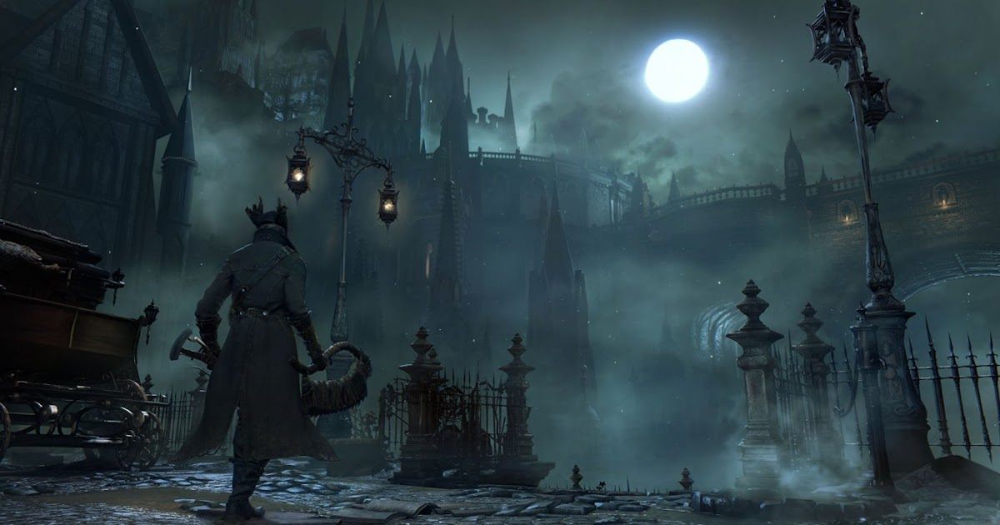
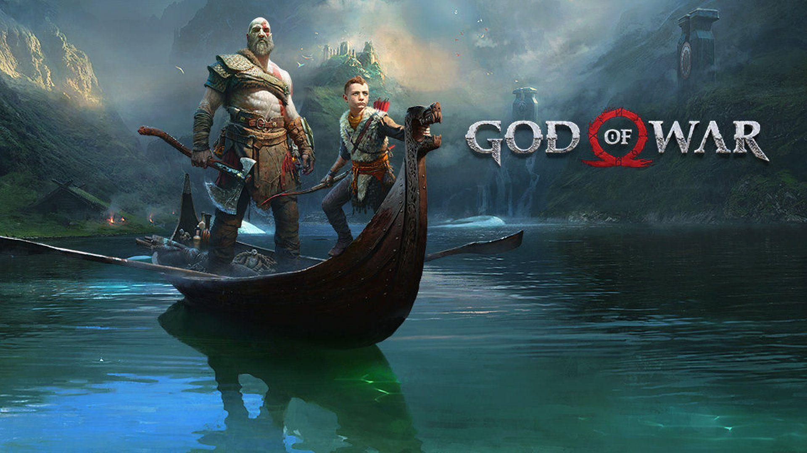
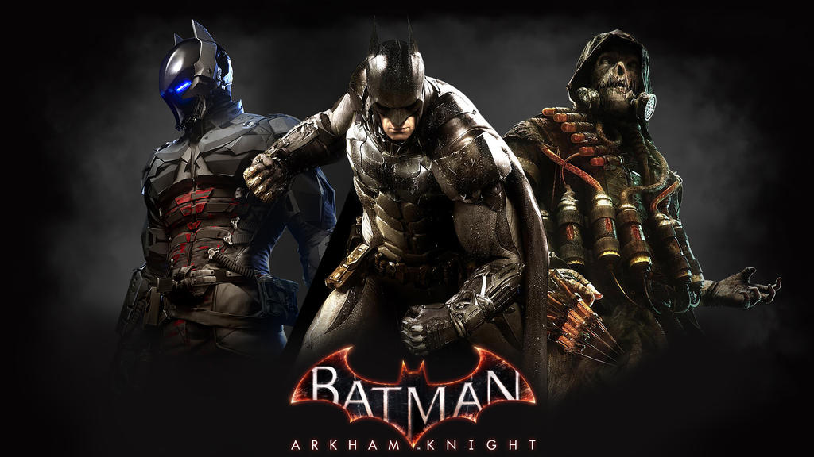

Los 4 mejores juegos que he jugado
Diego Alcoba Arias
Última actualización: marzo 2024
-
Bloodborne
Ver más detallesEl juego de From Software que hizo que muchos amasemos el género Soulslike y otra de sus sagas, Dark Souls
 -
Gears of War 2
Ver más detallesCon la segunda entrega de esta saga me enamoré de uno de los mejores juegos de la historia y pionero en el shooter en tercera persona

-
God of War
Ver más detallesLa secuela nórdica es sin duda uno de los mejores videojuegos de la historia
 -
Batman: Arkham Knight
Ver más detallesEl tercer juego de la saga pulió todo lo presentado en las anteriores sagas y supo cumplir con las expectativas de los fanáticos de la saga
